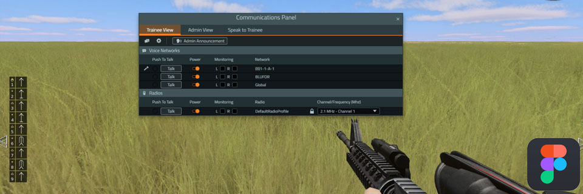
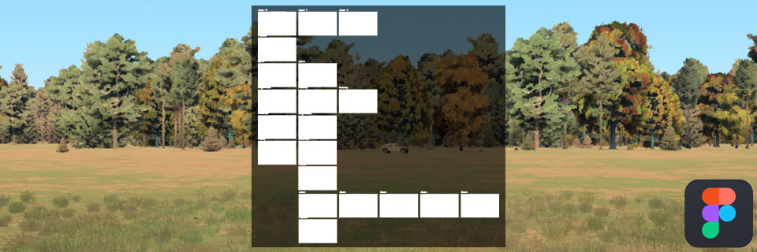
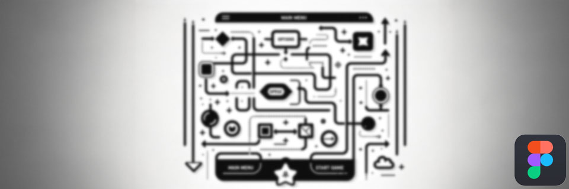

Intro
Embarking on a journey as a Technical Game Designer and Frontend Developer, I've carved a niche at the intersection of art and technology. My portfolio is a kaleidoscope of UX/UI design projects and frontend development roles, showcasing my flair for creating immersive and intuitive user experiences. My expertise in Photoshop scripting and agile methodologies is a testament to my dedication and adaptability in an ever-evolving digital landscape.
Each project in my career has been a step towards redefining user interaction and game design. Constantly pushing the boundaries, I am committed to innovating and enhancing the digital experience. This ongoing adventure is not just about mastering the tools and techniques but also about understanding and exceeding user expectations, making every interaction memorable and impactful. Join me in exploring the endless possibilities that lie in the fusion of design and technology.
Work

The radio UI elements in this military simulation game stand as a testament to the power of thoughtful UX design in enhancing player engagement and game functionality. By prioritizing intuitive usability, immersive aesthetics, and player-centric features, these UI elements elevate the gaming experience to new heights. (more...)

The launch of the Firestorm UI has been met with acclaim, particularly for its high fidelity to real military systems and its enhancement of gameplay realism. It serves as a compelling example of how UX design can bridge the gap between virtual and real-world experiences, particularly in a complex and demanding field like military simulation. (more...)

As the creator of this UX framework, my role encompassed the entire development cycle – from initial concept and research to prototyping, user testing, and final refinement. My approach was user-centric, focusing on creating a versatile and user-friendly interface framework that addresses common pain points in main menu design. (more...)
Firestorm
Project Overview
Designing Intuitive Radio UI Elements for a Military Simulation Game
The dynamic and high-stakes realm of military simulation games, where split-second decisions can alter outcomes, the design of user interface (UI) elements is not just about aesthetics—it's about survival and strategy. I had the unique opportunity to reimagine the radio communication interface, a crucial component for player interaction and strategy formulation in the game.
Project Highlights
- User-Centric Design: Leveraging my UX expertise, I crafted a radio UI that is intuitive and responsive, ensuring that players of varying skill levels can navigate and utilize the radio communication feature seamlessly. The design balances simplicity with functionality, enabling quick access and clear visibility under pressure-packed scenarios.
- Immersive Experience: The radio UI is designed to immerse players in a military environment. The visual elements echo real-world military radio equipment, providing a tactile and authentic experience. The use of rugged textures, tactical color schemes, and ergonomic layout reinforces the feeling of being in a high-stakes military operation.
- Accessibility and Customization: Recognizing the diverse needs of players, the radio UI was designed with accessibility in mind. It includes customizable settings for color contrast, font size, and button mapping to accommodate players with different preferences and abilities.
- Real-time Interaction: The UI supports real-time communication and decision-making, crucial for coordinating with team members during missions. The interface is optimized for minimal latency and maximum reliability, ensuring that every command and response is transmitted without delay.
- Feedback and Iteration: The design process involved rigorous testing and iteration based on player feedback. This approach ensured that the final product not only aligned with the aesthetic vision of the game but also met the practical needs of the players.
My Role
As a UX designer on this project, my role encompassed user research, interface design, prototyping, and user testing. Collaborating closely with UI developers and game designers, I ensured that the radio UI elements were not only visually compelling but also aligned perfectly with the game's overall design language and user experience goals.
Conclusion
The radio UI elements in this military simulation game stand as a testament to the power of thoughtful UX design in enhancing player engagement and game functionality. By prioritizing intuitive usability, immersive aesthetics, and player-centric features, these UI elements elevate the gaming experience to new heights.
Radio
Project Showcase: "Firestorm" UI Elements for JTAC Units in Military Simulation Game
Overview
In the cutting-edge domain of military simulation gaming, the "Firestorm" project stands out as a hallmark of technological and design prowess. As a key member of the UX design team, I contributed to the development of the Firestorm UI elements for Joint Terminal Attack Controllers (JTAC) units. This interface is a testament to high-fidelity design, closely mirroring real-world military systems to provide players with an unparalleled realistic experience.
Project Highlights
- Realism and Fidelity: The Firestorm UI is a high-fidelity interface that meticulously replicates the complexity and functionality of real-life JTAC equipment. Every aspect, from the tactical color palette to the arrangement of controls, was designed to reflect actual military hardware and operational protocols, providing players with a realistic and immersive experience.
- User-Centric Design Approach: Despite the complexity inherent in replicating real-world systems, the interface maintains a user-centric design. It offers intuitive navigation and easy access to crucial features, ensuring that players can operate the system efficiently, even under the stress of simulated combat scenarios.
- Immersive Tactical Experience: The design of the UI elements was driven by the goal of creating a fully immersive tactical environment. The attention to detail in replicating real-world JTAC systems enhances the game's authenticity, drawing players deeper into the strategic nuances of military operations.
- Adaptability and Accessibility: In recognition of the diverse player base, the Firestorm UI was designed with adaptability and accessibility in mind. Adjustable settings for visual and interactive elements enable a broad range of players to engage with the game comfortably and effectively.
- Collaborative Design Process: As part of the UX design team, my role involved collaborating closely with other designers, game developers, and military consultants. This collaborative approach ensured that the Firestorm UI was not only visually appealing but also functionally accurate and aligned with the tactical demands of military simulation.
My Role
Within the UX design team, my responsibilities included contributing to the conceptualization, design, and iterative testing of the UI elements. My focus was on ensuring that the interface was both aesthetically engaging and functionally robust, aligning closely with the real-world operations of JTAC units.
Impact and Reception
The launch of the Firestorm UI has been met with acclaim, particularly for its high fidelity to real military systems and its enhancement of gameplay realism. It serves as a compelling example of how UX design can bridge the gap between virtual and real-world experiences, particularly in a complex and demanding field like military simulation.
Wireframe
Innovative UX Framework for Main Menu UI Design in Interactive Media
Project Overview
In the dynamic and evolving world of interactive media, the user interface (UI) serves as the critical bridge between the user and the experience. Recognizing the need for a standardized yet adaptable approach to UI design, I developed an innovative UX framework specifically tailored for main menu interfaces, encompassing the versatility to integrate seamlessly into a wide array of applications, including pause menus.
Framework Highlights
- Universal Design Principles: My framework is built on the foundation of universal design principles, ensuring usability and accessibility across diverse user groups. It emphasizes intuitive navigation, clear visual hierarchy, and responsive design to accommodate various screen sizes and devices.
- Modular and Customizable: One of the framework's key strengths is its modular structure, which allows designers to easily adapt and customize elements to fit the specific needs and aesthetics of different projects. Whether it’s a minimalist design for a mobile app or a complex interface for a high-end game, the framework provides a solid base that can be tailored to any context.
- Consistency and Efficiency: By standardizing the core aspects of main menu design, this framework not only maintains consistency across different platforms but also significantly streamlines the design process. It provides a set of guidelines and templates that reduce development time and ensure a cohesive user experience.
- Innovative Pause Menu Integration: Recognizing the importance of pause menus in interactive experiences, the framework includes specialized templates and best practices for pause menu design. This ensures that even the pause menu, often an afterthought, is integrated seamlessly and maintains the overall user experience's flow and engagement.
My Role and Approach
As the creator of this UX framework, my role encompassed the entire development cycle – from initial concept and research to prototyping, user testing, and final refinement. My approach was user-centric, focusing on creating a versatile and user-friendly interface framework that addresses common pain points in main menu design.
Impact and Usability
Since its implementation, this framework has been praised for its adaptability and effectiveness in enhancing user experience in various interactive media. It demonstrates how a well-thought-out UX framework can lead to more cohesive, accessible, and enjoyable user interfaces, ultimately elevating the overall quality of interactive products.
Contact